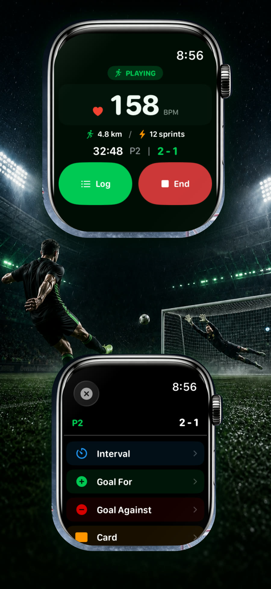
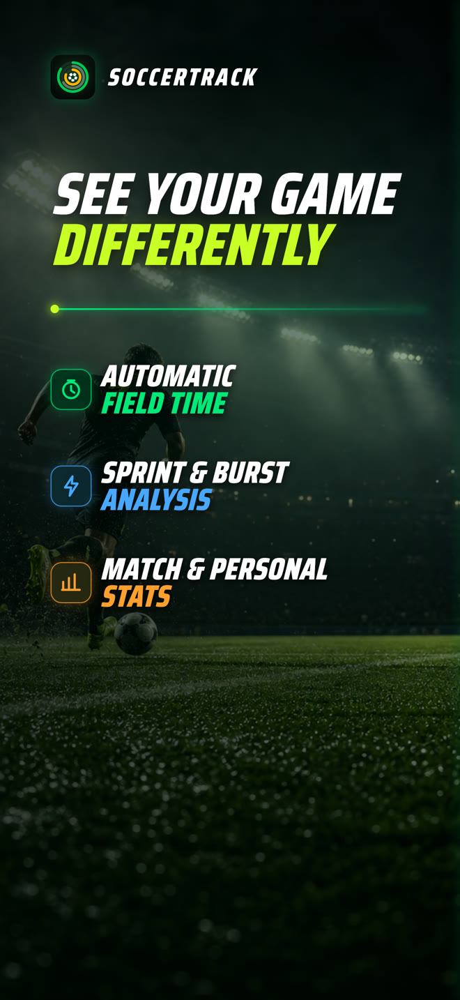
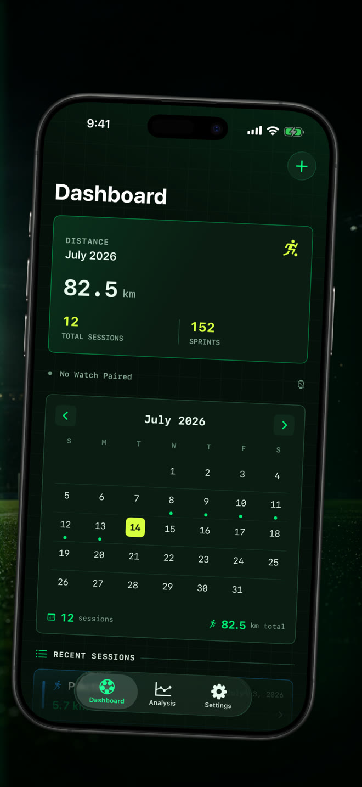
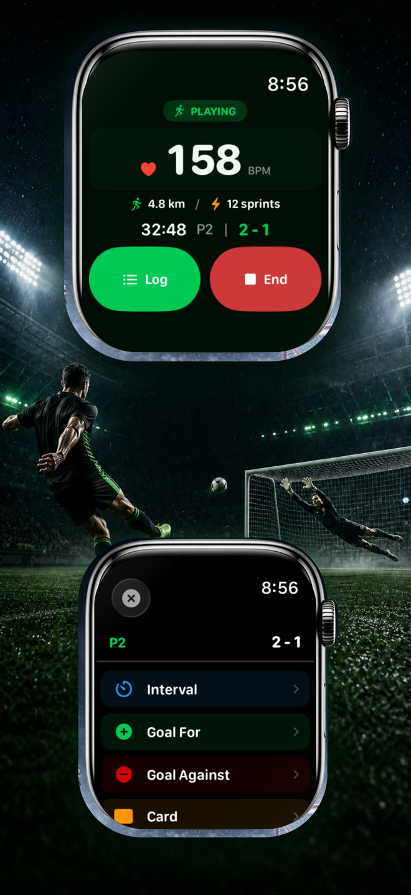
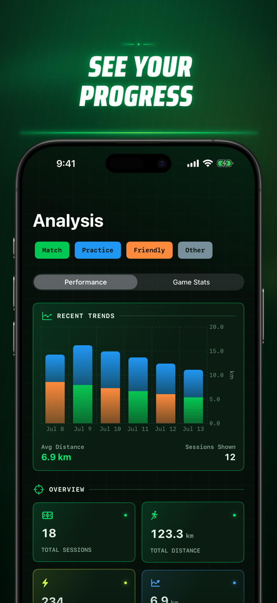
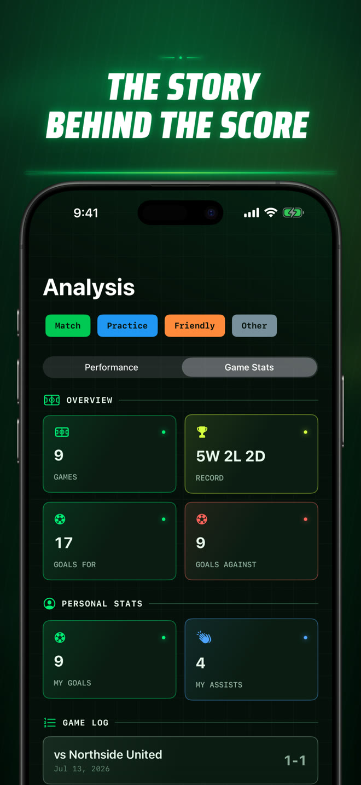
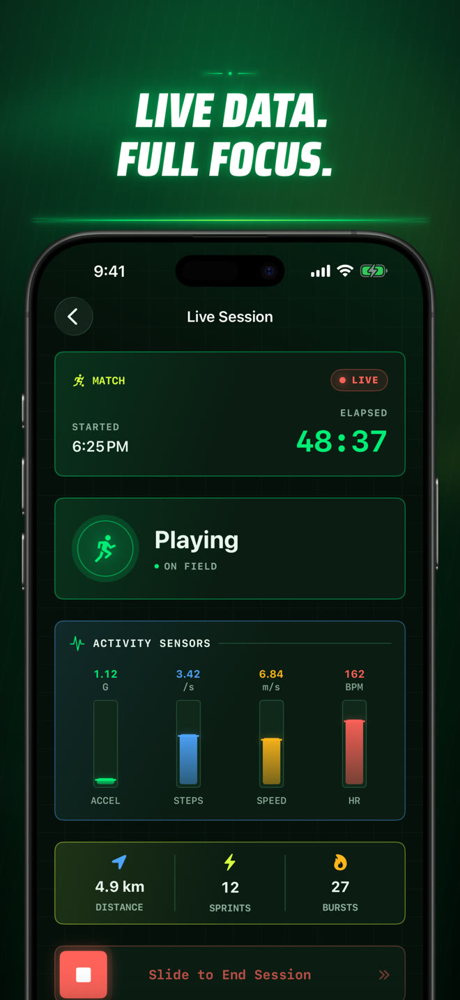
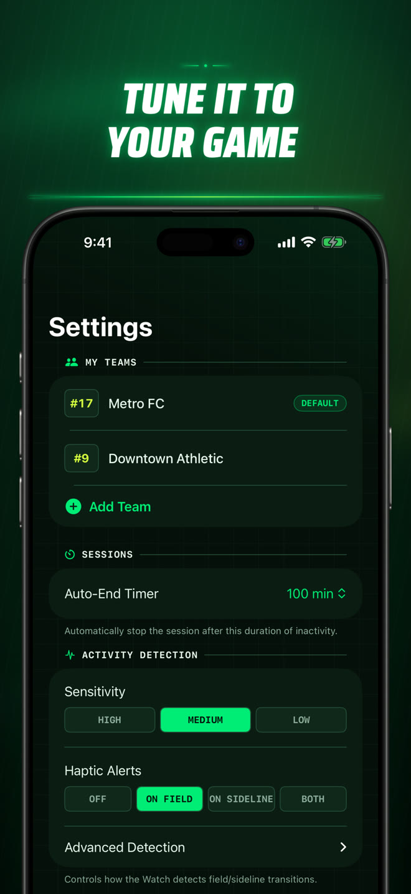
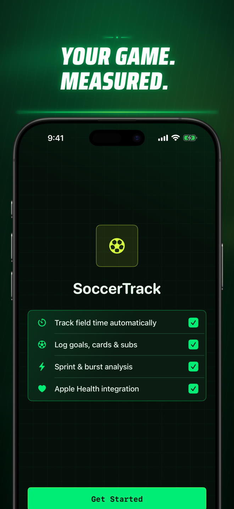

Know when you were in it.
See playing, low-activity, and sideline periods as a clear timeline, with every stint measured from start to finish.
Soccer · Apple Watch + iPhone
Start a session on Apple Watch, then play. Soccer Time Track separates field time from sideline time and turns every match into performance data you can actually use.

Beyond the final score
The scoreboard remembers one result. Soccer Time Track remembers how you got there — your minutes on the field, the moments you exploded into space, the events that changed the game, and the progress that appears over time.


Three simple moves
The tracking happens in the background so your attention stays where it belongs: on the match.
Choose Match, Practice, Friendly, or Other on Apple Watch and begin the session.
Motion, cadence, and GPS speed help classify playing, low-activity, and sideline time automatically.
Review your session, match events, trends, and personal records on iPhone after the whistle.
Your game, measured
A match-day system built around the way players move, compete, and improve.
See playing, low-activity, and sideline periods as a clear timeline, with every stint measured from start to finish.
Track distance, speed, heart rate, active calories, cadence, acceleration, sprints, and high-intensity bursts.
Log goals for and against, your goals and assists, yellow and red cards, substitutions, and period markers from your wrist.
A paired iPhone can display the active state and live performance metrics while Apple Watch keeps your workout running.
Compare matches and practices, explore trends, and surface personal records across your growing session history.
Adjust sensitivity, haptic alerts, activity thresholds, teams, jersey numbers, and session behavior to fit how you play.
Privacy is part of the product
No Soccer Time Track account, no advertising, and no third-party analytics inside the app.
Inside the app






Questions, answered
The essentials about hardware, detection, Apple Health, privacy, and your session data.
Automatic field-time detection and live workout metrics require Apple Watch. You can still add and manage manual sessions on iPhone.
During a session, motion, step cadence, and GPS speed help classify your activity as Playing, Low Activity, or Sideline. Detection is an estimate and can be tuned in Settings for different playing styles and conditions.
Apple Watch records the session on your wrist. A nearby paired iPhone is needed to see the live companion view, but the completed session transfers when connectivity is available.
With your permission, the app can save a completed soccer workout and use heart rate, active energy, and walking/running distance to build your session insights. You control Health access in Apple’s Settings and Health apps.
Sessions are stored on your devices. If iCloud Sync is enabled, records are also stored in your private iCloud database so they can stay in sync. Soccer Time Track has no developer account system or advertising profile.
Yes. Export sessions, stints, and match events as CSV or JSON. Delete individual sessions or all sessions from Settings; linked Apple Health workouts can also be removed when you choose that option.
Setup guidance, permission checks, sync help, and direct support are all in one place.
Launching on the App Store
The first release of Soccer Time Track is being prepared now for iPhone and Apple Watch.